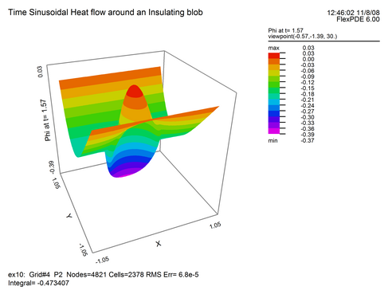
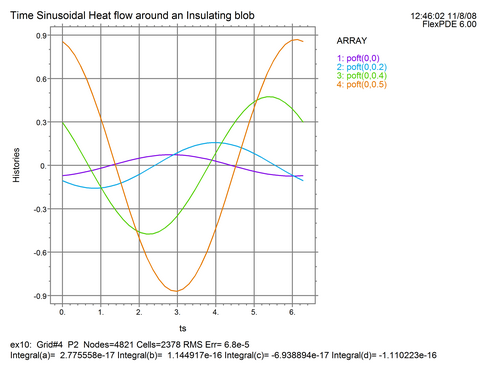

|
Interpreting Time-Sinusoidal Results |

  
|
|
Interpreting Time-Sinusoidal Results |
|
Knowledge of the real and imaginary parts of the complex amplitude function is not very informative. What we really want to know is what the time behavior of the temperature is. We can investigate this with the help of some other facilities of FlexPDE 6.
We can examine distributions of the reconstructed temperature at selected times using a REPEAT statement
PLOTS
REPEAT tx=0 BY pi/2 TO 2*pi
SURFACE(Phir*cos(tx)+Phii*sin(tx)) as "Phi at t="+$[4]tx
ENDREPEAT
We can also reconstruct the time history at selected positions using ARRAYS. The ARRAY facility allows us to declare arbitrary arrays of values, manipulate them and plot them.
We will declare an array of time points at which we wish to evaluate the temperature, and compute the sin and cos factors at those times. We also define an ARRAY-valued function to return the time history at a point:
DEFINITIONS
ts = ARRAY (0 BY pi/20 TO 2*pi) { An array of 40 times }
fr = cos(ts) fi = sin(ts) { the arrays of trigonometric factors }
poft(px, py) = EVAL(phir,px,py)*fr + EVAL(phii,px,py)*fi
PLOTS
ELEVATION(poft(0,0), poft(0,0.2), poft(0,0.4), poft(0,0.5)) VS ts
AS "Histories"
Two of the plots produced by the addition of these script lines are:

